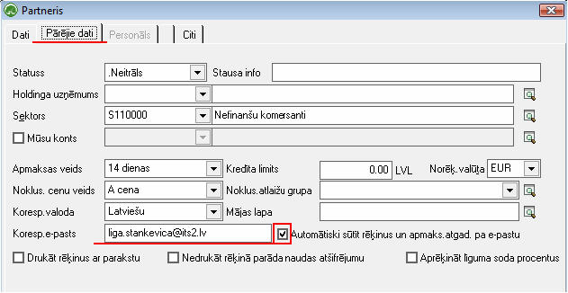
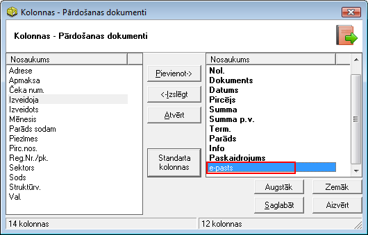
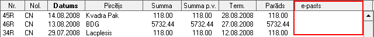
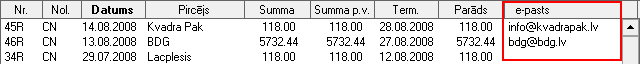
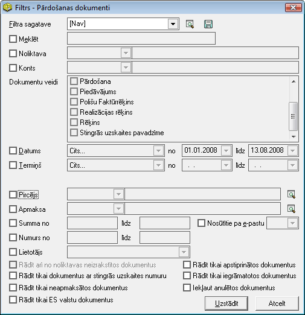
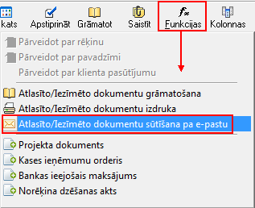
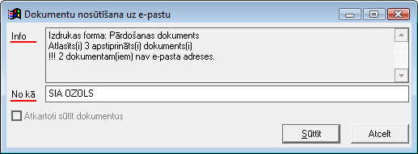
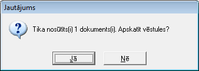

Rēķinu sūtīšana pa e-pastu¶
Rēķinu sūtīšana pa e-pastu kalpo ērtākai un ātrākai elektroniska formāta rēķinu nosūtīšanai.
Rēķinu sagatavošana sūtīšanaipa e-pastu.¶
Rēķinus sagatavo, veidojotmaksājuma plānu un ģenerējot rēķinus , vaiarī izveidojot pārdošanas dokumentu .
Priekšnosacījumi sekmīgai rēķinu nosūtīšanai elektroniskā formātā pa e-pastu
1. Pirmsrēķinu ģenerēšanas vai veidošanas ,:doc:partneru kartiņā<312> jabūt norādītam korespondējošam e-pastam un ieliktam ķeksītim - Automātiski sūtīt rēķinus un apmaksas atgādinātājus pa e-pastu:
{kind=link}
2. Ja rēķins jau ir sagatavots,:doc:Pārdošanas dokumentu žurnālā<204> nepieciešams pārbaudīt, vai jau esošo rēķinu klientiem ir norādīta korespondējošā e-pasta adrese.
Lai to izdarītu, Pārdošanas dokumentu žurnālā nepieciešams pievienot papildus kolonnu e-pasts, rīku joslā nospiežot pogu
{kind=link}
Ja kolonnā E-pasts nebūs e-pasta adrese, tad izvēlētais rēķins netiks nosūtīts:
{kind=link}
Ja kolonnā e-pasts būs e-pasts/i, tad attiecīgajam Partnerim rēķinu būs iespējams nosūtīt uz norādīto e-pastu:
{kind=link}
Lai pārdošanas dokumentu žurnālāesošā rēķina klientam pievienotu korespondējošo e-pasta adresi - jāatver rēķinu un, ar dubultklikšķi uz pircēja nosaukuma pirmo lauku, jāatver Partnera kartiņu. Jāatver Partnera kartiņas sadaļa Pārējie dati, un jāieraksta korespondējošais e-pasts un jāieliek ķeksītis “Sūtīt rēķinus un apmaksas atgādinājumus uz e-pastu”:
Pēc korespondējošā e-pasta adreses ierakstīšanas, jāsaglabā Partnera kartiņa, jāaizver rēķins un, esot Pārdošanas dokumentu žurnālā, uz klaviatūras jānospiež taustiņš F5.Pēc F5 taustiņa nospiešanas, e-pastakolonnā parādīsies ievadītais klienta korespondējošaise-pasts.
Ja partneru kartiņā būsaizpildīts laukskorespondējošais e-pasts, tad ģenerējot vai izveidojot rēķinu, e-pasta adreses lauks tiks aizpildīts automātiski.
Rēķinu sūtīšanapa e-pastu¶
Lai nosūtītu rēķinupa e-pastu, pārdošanas dokumentus iespējamsatlasīt pēc nepieciešamajiem filtra kritērijiem (Dokumenta veida, Datuma, Termiņa vai citiem):
{kind=link}
Laivajadzīgie dati tiktu atlasīti,jānospiež poga

Pēc vajadzīgo datu atlasīšanas, nepieciešams aktivizēt multi iezīmēšanas komandu, lai atzīmētu rēķinus, kurus sūtīt uz e-pastu:
Ar taustiņu kombināciju Ctrl+Y
vai
Rīku joslā uzspiežot uz Multi iezīmēšanas ikonas

Atzīmēt nepieciešamos ierakstus iespējams, nospiežot uz klaviatūras taustiņu CTRL, to turot un ar peles kreiso taustiņu atzīmējot nepieciešamos ierakstus. Lai atzīmētu vairākus apgabalus, nepieciešams izmantot klavitatūras taustiņu Shift.
Atzīmējot attiecīgos dokumentus, kuriem ir e-pasta adrese un kurus ir nepieciešams izsūtīt, rīku joslā jānospiež poga

un jāizvēlas funkcija:atlasīto/iezīmēto dokumentu sūtīšana pa e-pastu.
{kind=link}
Pēc funkcijas izvēles, programma parādīs paziņojumu par to cik dokumenti ir atlasīti apstiprināti un dokumentu skaitu, kuriem nav norādīts e-pasts:
{kind=link}

Obligāti aizpildāmais logs ir No kā - ja šis logs nebūs aizpildīts, tad programmu e-pastu nosūtīt neļaus.
Ja logs No kā ir aizpildīts, tade-pastu nosūtīšanai nepieciešamsnospiest pogu
{kind=link}
Pēc pogas sūtīt nospiešanasprogramma sagatavos un nosūtīs atlasītos rēķinus Partneriem, piedāvājot iespēju apskatīt vēstules:
{kind=link}
Nospiežot poguJĀ, programma piedāvās apskatīt nosūtītos e-pastus partneriem. Spiežot pogu NĒ, nosūtīšanas funkcijas darbs tiks pabeigts.
Ieraksti ar nosūtītajiem rēķiniem tiek saglabāti Pasta modulī nosūtīto vēstuļu žurnālā .